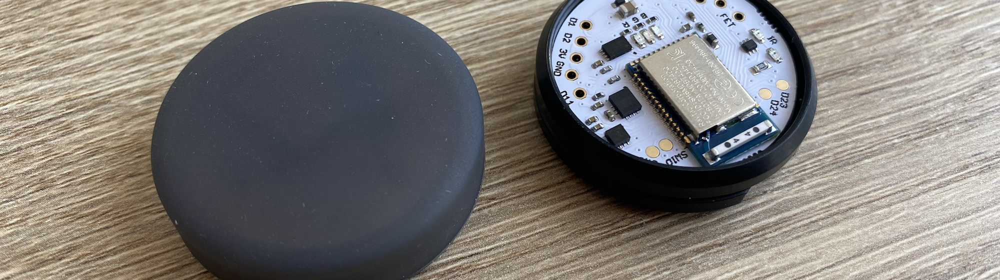
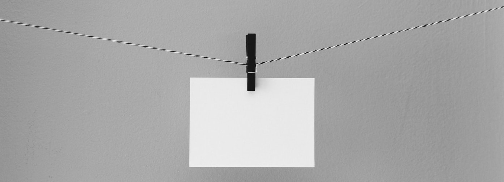
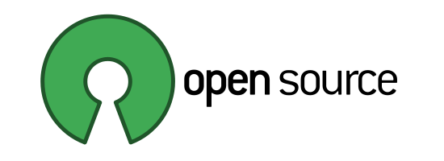

Puck.js Sensor Logger
Turn your Puck.js into a simple passive tracker. Collect the current temperature, light level and accelerometer data every 5 minutes.

Once installed the Puck.js will collect sensor data every 5 minutes.
The collected data includes the temperature, light level and accelerometer data every 5 minutes.
No apps needed: Press the install button above, select your Puck.js and you're good to go. And downloading the data is just as easy.
Web Bluetooth currently only works in Chrome & Opera browsers. With them you can install the Sensor Logger app on your Puck.js and download the data right from this website. But no information is ever transmitted to the web. Whatever you track, it's between your Puck.js and your browser.

Everything is open source for you to tweak: The Puck.js with all of its hardware, firmware & software and this website is as well.
You can get involved! All the code etc. for the Puck.js are on GitHub. And so is the code for this website & the Puck Logger.